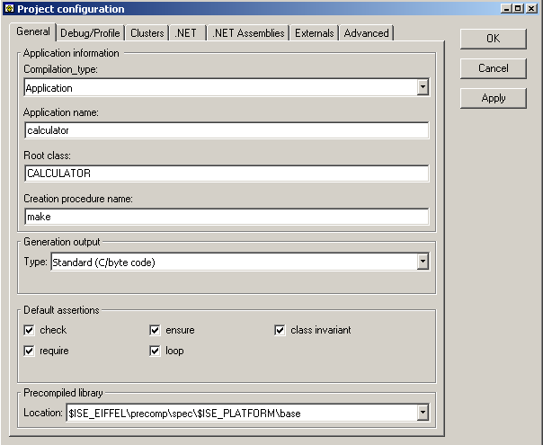
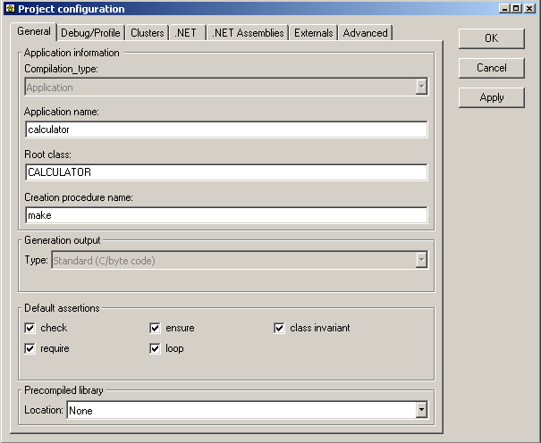

This is where you can configure the most general aspect of your system. For example you can set the name of your application, the default level of assertion checking, the type of the generation (normal C generation/compilation, or the .NET generation) and if you are using a precompiled library or not.
Here is what you will see when opening for the first time in a session the project setting window when using the ace file of the calculator example located at $ISE_EIFFEL|examples|base|calculator:

As you can see, you can specify the application name which will also be the executable name. With the root class along with the creation procedure name entries you can select which class is going to be the root of your execution, in this case the make feature of the CALCULATOR class is selected.
Moreover you can choose the default level of assertions. This applies to all Eiffel classes located in clusters specified in clusters tab. To override this default on a cluster by cluster basis, you need to go to the clusters tab. Contrary to ISE Eiffel 4.5, each level is independent, meaning that one can check only the invariants without checking the preconditions.
Once your project is compiled here is what your general tab looks like:

You will notice that now you cannot change some options. They are on purpose disabled. If you want to change those option again you will need to recompile from scratch your project.